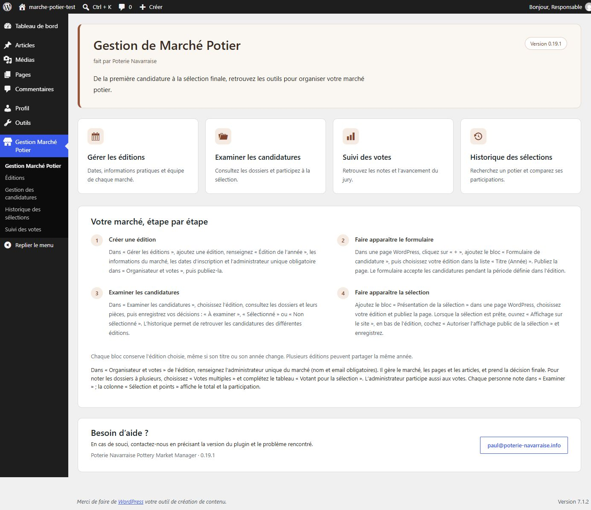
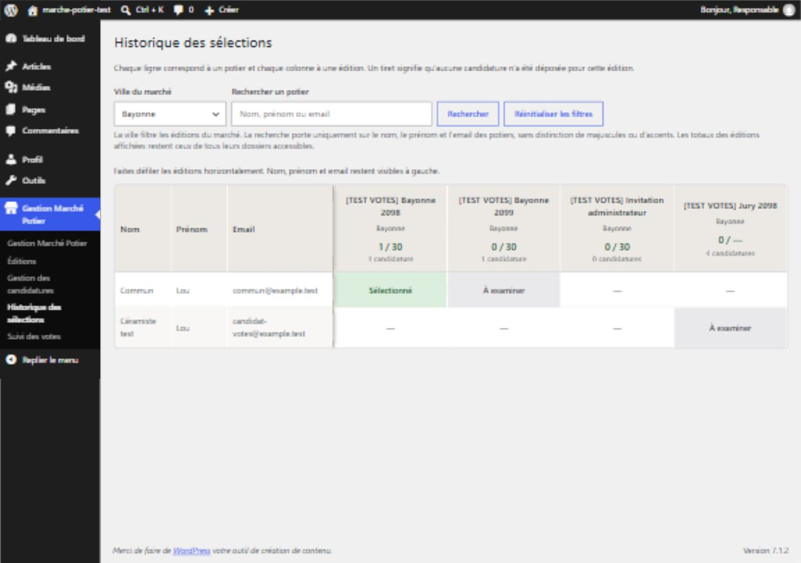
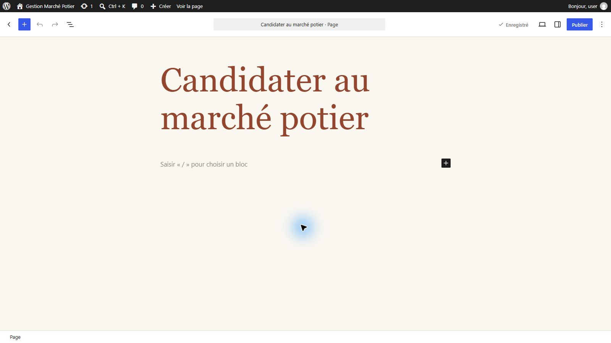
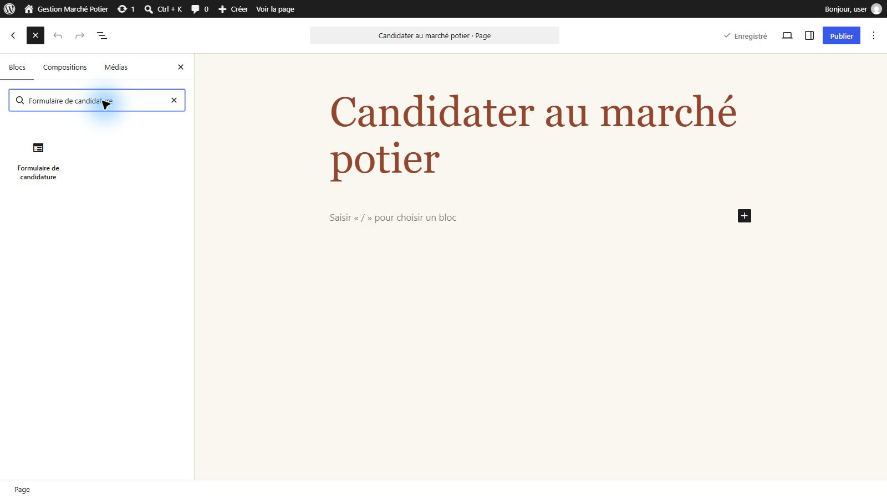
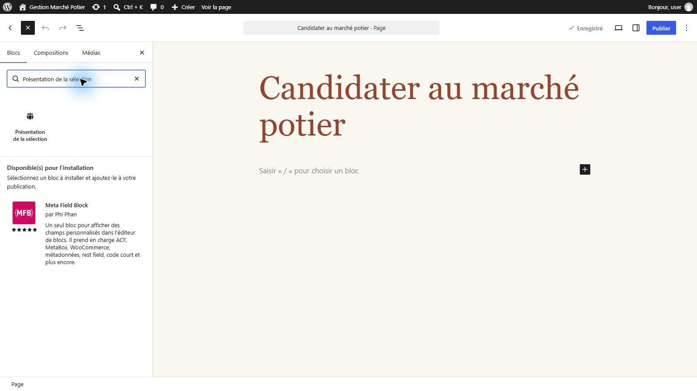

SANS SURCOÛT DE FORMULAIRE
Un formulaire intégré,
sans plugin payant.
Recueillez les candidatures avec le formulaire inclus : aucune extension de formulaire payante à ajouter.
POUR LES ORGANISATEURS DE MARCHÉS POTIERS
Un plugin gratuit à installer sur votre site WordPress pour préparer vos éditions, examiner les dossiers et présenter les potiers sélectionnés.
Pour organiser un marché potier ou accompagner une association qui gère plusieurs marchés dans différentes villes.
Poterie Navarraise Pottery Market Manager · Extension libre sous licence GPL-2.0-or-later.
PENSÉ POUR VOTRE PROCHAIN MARCHÉ
01 — Préparer votre édition
02 — Réunir les candidatures
03 — Choisir, seul ou avec un jury
04 — Présenter votre sélection
Le plugin a été approuvé et est désormais disponible gratuitement dans le répertoire officiel des extensions WordPress. Consulter la fiche WordPress.org.
LES AVANTAGES AU QUOTIDIEN
SANS SURCOÛT DE FORMULAIRE
Recueillez les candidatures avec le formulaire inclus : aucune extension de formulaire payante à ajouter.
TOUT DANS LE DOSSIER
Retrouvez les photos et les justificatifs au même endroit que les informations du candidat, pour examiner chaque dossier plus facilement.
VOTRE SÉLECTION EN VITRINE
Ajoutez le bloc de présentation à votre page pour afficher les exposants sélectionnés et autorisés, avec leurs photos et leur présentation.
LA MÉMOIRE DE VOS MARCHÉS
Consultez l’historique des éditions précédentes et filtrez par ville pour retrouver rapidement les potiers déjà sélectionnés.
LES FONCTIONNALITÉS
01 / Éditions
Un marché dans votre ville ou plusieurs marchés dans différentes communes : gérez chaque édition dans son propre espace, avec ses dates de candidature, ses tarifs, son règlement et ses paramètres de stand.
02 / Candidatures
Les potiers candidatent sans compte WordPress. Coordonnées, présentation, trois photos de créations, photo du stand et deux justificatifs composent le dossier.
03 / Sélection
Confiez la sélection à un seul administrateur ou organisez une évaluation collégiale avec plusieurs votants. En mode jury, les votants affectés à l’édition reçoivent les notifications des nouvelles candidatures et peuvent examiner les dossiers et les noter de 0 à 5 au fil de leur réception. Le suivi permet de voir l’avancement des votes ; l’administrateur enregistre la décision finale.
04 / Historique
Retrouvez les sélections passées, filtrez par ville du marché et recherchez un potier par nom, prénom ou email.
05 / Exports
Exportez en CSV les candidatures correspondant à vos filtres et à votre recherche, sur toutes les pages de résultats.
06 / Galerie
Publiez les photos, techniques et liens des exposants autorisés. Une carte facultative complète la galerie, avec des accords distincts.
Les blocs « Formulaire de candidature » et « Présentation de la sélection » s’intègrent à l’éditeur WordPress. Aucun constructeur de formulaires ni ACF n’est nécessaire.
DANS LE PLUGIN
Captures réelles de l’environnement de test du 30 septembre 2026. Les données sont fictives ; certains écrans affichent encore la version 0.19.1.


BIEN DÉMARRER
Prérequis déclarés : WordPress 6.6 ou plus, PHP 8.2 ou plus, Fileinfo, GD avec JPEG/PNG/WebP et MySQL/MariaDB avec verrous nommés. Les versions minimales ne constituent pas une matrice de compatibilité entièrement testée.
Dans votre tableau de bord WordPress, ouvrez Extensions → Ajouter une extension, recherchez Poterie Navarraise Pottery Market Manager, puis cliquez sur Installer maintenant et Activer. Vous pouvez aussi installer manuellement le ZIP GitHub via Téléverser une extension ; choisissez le fichier installable, et non les archives « Source code ».
Ouvrez Gestion Marchés Potiers. Renseignez la ville, les dates, les informations pratiques et l’administrateur obligatoire. Enregistrez puis publiez l’édition ; l’envoi de l’invitation ne la publie pas.
Dans une page WordPress, cliquez sur le bouton + en haut à gauche. Recherchez Formulaire de candidature, cliquez sur le bloc proposé, puis choisissez l’édition. Utilisez un seul formulaire par page, excluez cette page du cache et testez un dossier complet ainsi que les emails.


Dans la page destinée aux exposants, cliquez sur +, recherchez Présentation de la sélection et cliquez sur le bloc proposé. Choisissez ensuite l’édition. Quand vous êtes prêt, autorisez l’affichage public dans l’édition. Seuls les dossiers sélectionnés et autorisés apparaissent.

QUESTIONS FRÉQUENTES
Non. Les candidats remplissent le formulaire public sans compte. Les organisateurs et membres du jury utilisent des comptes WordPress avec des droits adaptés.
Non. Les notes vont de 0 à 5 et aident à la décision. La sélection finale est enregistrée manuellement. Les votes ne sont pas fermés par la date de clôture des candidatures.
Non. IGN et OpenStreetMap sont désactivés par défaut et s’activent séparément par un administrateur WordPress. Chaque candidat doit aussi donner son accord cartographique facultatif. Le refus ne bloque ni la candidature ni la galerie.
Les photos acceptent JPEG, PNG et WebP ; les justificatifs acceptent aussi le PDF. La limite est de 20 Mo par fichier, ou moins selon l’hébergement. HEIC n’est pas pris en charge.
Non. Le dépôt envoie des confirmations via WordPress, mais une décision de sélection ou de refus ne déclenche pas de message automatique dans cette version.
Sauvegardez la base de données et les fichiers du site. Pour la version distribuée sur WordPress.org, installez les mises à jour proposées dans Tableau de bord → Mises à jour ou Extensions. Si vous utilisez une release GitHub plus récente, la mise à jour depuis GitHub reste manuelle : téléversez le nouveau ZIP et choisissez le remplacement. Consultez les notes de la release avant chaque mise à jour pour connaître les changements et les éventuelles consignes de migration. Pour l’ancien paquet de test 0.19.0 « marche-potier », désactivez-le avant d’activer le nouveau et recréez les éditions et affectations.
Oui. Le plugin est maintenant disponible dans le répertoire officiel des extensions WordPress et peut être installé directement depuis votre tableau de bord.
La traduction française de la fiche a été préparée, mais elle n’est pas encore affichée sur WordPress.org. Vous pouvez consulter la présentation et le guide d’installation en français sur ce site.
VOTRE PROCHAINE ÉDITION COMMENCE ICI
Téléchargez le plugin, installez-le sur un site de test et découvrez son fonctionnement avant d’ouvrir vos candidatures.
Extension libre · GPL-2.0-or-later · Disponible sur WordPress.org
Une question ? paul@poterie-navarraise.info